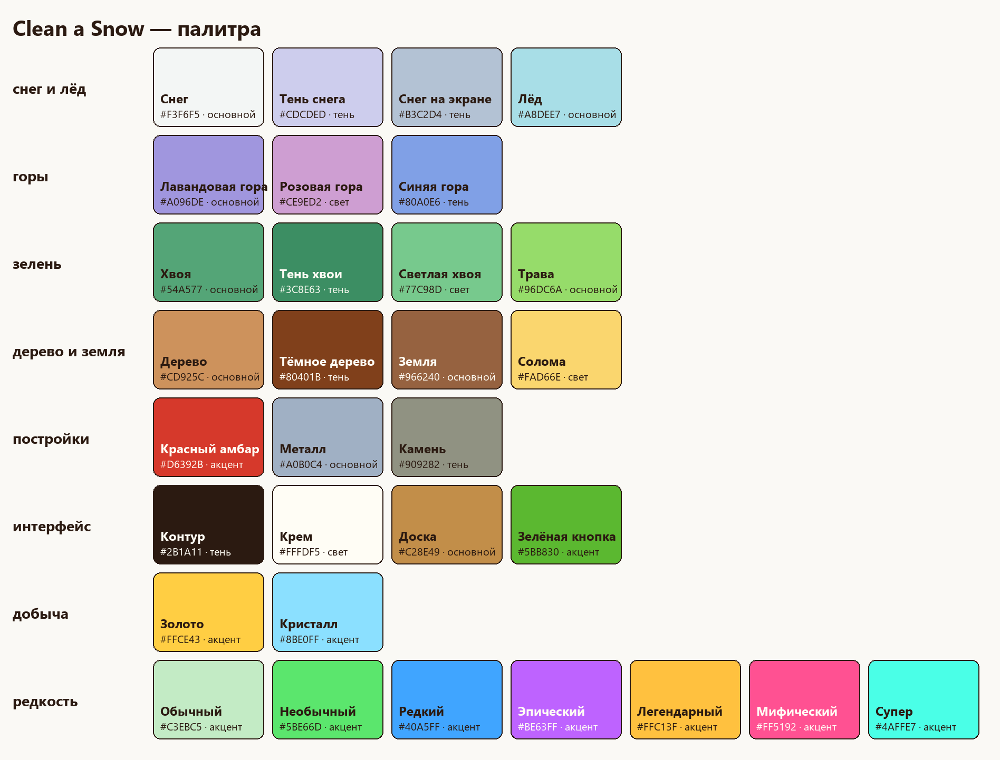
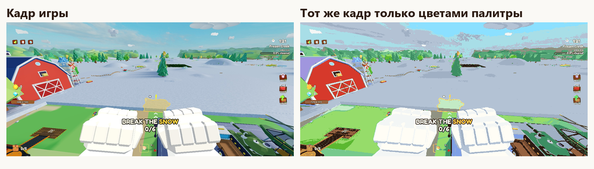

docs/style.md
Стиль игры
Решение владельца 10.11.2026: палитра, стайлгайд и лимиты моделей утверждены. Стиль — как сейчас в игре (решение владельца 09.11.2026). Источник — кадры art/frames/, цвета плейса и кода. Палитра — art/palette.json, бюджеты моделей — art/budgets.json.

Суть
Игрушечная ферма зимой. Низкополигональный мультяшный мир: плоские цвета без текстур, крупные простые формы, видны грани. Белый и сиреневый снег, пастельные горы, бирюзовые ели, тёплые деревянные домики и красный амбар. Светло и дружелюбно, для детей.

Цвета
- Только цвета палитры. В картинках и промптах цвета пишутся кодами из
art/palette.json. - Снег и горы — фон. Дерево, земля и постройки — середина. Золото, кристалл, красный и зелёная кнопка — малые акценты.
- Цвета редкостей — только для рамок, плашек и надписей редкости. Это ровно цвета
GardenService.rarityColors. - Свет игры меняет видимый цвет: в забеге снег на экране серо-голубой («Снег на экране»), на закате в лобби — розовый. В свойствах Color и в текстурах стоят точные цвета палитры.
Шрифт и надписи
- Шрифт — Fredoka One: жирный и круглый. Gotham Bold и Black встречаются редко, новый текст ими не делать.
- Надпись — «Крем» с тёмно-коричневым контуром «Контур». Число в надписи (монеты, гемы, счёт) — цвета своей добычи: «Золото» или «Кристалл».
- Слов мало: на кнопке одно слово, в подсказке 1–2 короткие строки.
Кнопки
- Кнопка HUD — картинка-иконка, под ней одно слово крупными буквами (PETS, SHOP, UPGR). Столбик таких кнопок стоит у правого края.
- Маленькая квадратная кнопка — иконка на плашке «Тёмное дерево» с контуром.
- Длинная кнопка — плашка «Доска» со скруглёнными углами и надписью в одну строку (MORE ACTIONS).
- Кнопка «можно» и «купить» — «Зелёная кнопка» с тёмно-зелёным контуром.
Окна
- Большое окно (магазин, питомцы, улучшения, сад) — доска «Доска» или «Тёмное дерево» с контуром «Контур», заголовок кремовым жирным шрифтом. Размер — по правилу «Большие окна» в
AGENTS.md. - Подсказка обучения — тёмная полупрозрачная плашка со скруглёнными углами: маленький золотой заголовок шага, крупная белая строка и одна строка пояснения.
Иконки
- Иконки — растровые картинки ChatGPT Image (skill
codex-imagegen), в стиле игры: объёмные, мультяшные, с мягким светом, без надписей. Кадрыart/frames/идут в генерацию как--ref. - Монета — золотое солнце, гем — голубой кристалл, питомцы — лапа, магазин — красная корзина, улучшения — зелёная стрелка.
- Эмодзи, Unicode-значки, шрифтовые иконки и нарисованные агентом SVG не использовать.
Модели
- Крупные простые массы, мало мелких деталей. Грани видны, сглаживать их не нужно. Силуэт читается с расстояния забега на экране телефона.
- Пропорции чуть игрушечные: толстые доски и брёвна, большие окна и двери, округлые сугробы. Снег лежит шапками на крышах, заборах и ветках.
- Материал — SmoothPlastic с плоским цветом палитры. Снег и лёд мира — материалы Terrain Snow и Ice. Одна модель — один материал, редко два (светящиеся части — Neon). Текстура только для надписей и рисунков.
- Размеры в метрах, 1 стад = 0,28 м. Персонаж — стандартный аватар Roblox. Инструмент в руке — примерно от пояса до головы аватара. Двери пропускают аватара свободно, ступени не выше колена.
- Животные — в природных цветах своего вида, упрощённых до плоских зон. Два вида не отличаются только размером.
- Лимиты по классам —
art/budgets.json: инструмент 2000 треугольников, мелкий предмет 1000, крупный 3000, постройка 6000, машина 8000, питомец 3000 и 30 костей, зверёк 1500 и 20 костей, растение 1200. - Модели, которые уже стоят в плейсе, сохраняют свои цвета. Палитра — для новых моделей, картинок и окон.
Нельзя
- Реалистичные текстуры, фотоматериалы, шум, грязь и потёртости.
- Неоновые и кислотные цвета вне палитры, чёрный как основной цвет.
- Тонкие длинные детали, которые теряются на телефоне.
- Буквы и цифры на модели, если их не просили.
Промпт концепта модели
Low-poly cartoon 3D game asset for a Roblox winter farm game, <object>.
Shown from the front, the side and the back in one image, same pose and scale, T-pose for creatures,
plain light background, no text, no shadows on the ground.
Flat colours only, visible facets, chunky toy-like proportions, snow caps where snow would lie.
Use only these colours: <hex codes from art/palette.json>.
Для референса окна или экрана: кадры art/frames/ идут в --ref, в промпте — деревянные плашки с тёмно-коричневым контуром, кремовый жирный круглый шрифт, золото и голубой только для монет и гемов.
Чек-лист критика по стилю
- Форма простая, грани видны, силуэт читается на телефоне.
- Все цвета из
art/palette.json, оттенков сверх палитры нет. - Материал SmoothPlastic, текстур нет или они только для надписей.
- Масштаб сверен с аватаром Roblox.
- Снег лежит там, где он лежал бы зимой.
- Модель или окно не выбивается рядом с домиками, елями, амбаром и HUD на кадрах игры.